우리 모델의 세 번째 구조를 받치는 부분이다. 충돌에는 시스템이 피할 수 있었던 것과, 누구도 피할 수 없는 것이 섞여 있다. 누구도 못 피하는 충돌의 비율을 가려내 강건성 점수에서 떼어내려면, 충돌의 회피가능성과 책임 소재를 판정하는 규칙이 필요하다. 그 규칙들을 검토해, 우리 하한 u를 어떻게 라벨링할지 정한다.
먼저, 용어 정리
회피가능 / 불가피 충돌그 충돌을 ego(AV)가 막을 수 있었는가. 막을 수 있었으면 회피가능, 무엇을 해도 못 막았으면 불가피.
하한 u (unavoidable floor)누구도 피할 수 없는 충돌의 비율. 능력이 아무리 높아도 깔리는 바탕 충돌로, IRT 3PL의 추측 하한 c와 같은 자리다. 강건성에서 떼어내야 공정하다.
귀책 (fault attribution)사고의 책임이 누구에게 있는지 판정하는 것. ego 책임이면 회피가능, 상대 책임이면 ego에게는 불가피에 가깝다.
RSS · 적정 대응Responsibility-Sensitive Safety. 안전거리와 위험 시 해야 할 적정 대응(proper response, 예: 제동)을 형식 규칙으로 정의한다.
예견·예방 가능성규제(UN R157)에서 쓰는 기준. 숙련 운전자라면 막았을 충돌이면 preventable, 아니면 unpreventable로 본다.
On a Formal Model of Safe and Scalable Self-Driving Cars
S. Shalev-Shwartz, S. Shammah, A. Shashua. arXiv:1708.06374 (2017). Mobileye.
한눈에RSS(Responsibility-Sensitive Safety)는 "안전한 거리", "적정 대응", "책임"을 수학적 규칙으로 정의한 형식적 안전 모델이다. 핵심은 책임 정의다. 적정 대응 규칙을 지키지 않은 행위자가 사고에 책임이 있다. 거꾸로, ego가 규칙을 지켰는데도 당한 충돌은 ego의 잘못이 아니다. Fig 1처럼 둘러싸여 어떤 행동으로도 피할 수 없는 충돌이 존재함을 인정한다. 우리 회피가능성 하한 u를 라벨링하는 형식적 기준이다.
Fig 1 · 절대적 안전은 불가능하다
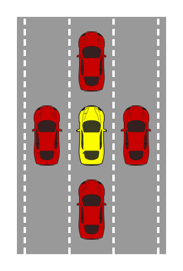
가운데(노란) 차는 앞·뒤·좌·우가 모두 막혀, 앞차가 급제동하면 어떤 행동으로도 충돌을 피할 수 없다. 누구도 못 피하는 충돌(우리 하한 u)이 실재함을 보여준다. (클릭 시 확대)
접근
안전거리·적정대응·책임을 형식 규칙으로 정의(RSS)
책임 원칙
적정 대응을 안 지킨 쪽이 사고의 원인(=책임)
핵심 함의
ego가 규칙 준수했는데 당한 충돌 = 무과실(불가피)
우리와의 연결
회피가능성 하한 u의 라벨 기준
연구 배경
AV 안전을 "충돌을 절대 안 낸다"로 정의하면 달성할 수 없다. 주변 차가 무모하게 들이받으면 어떤 차도 절대적 안전을 보장할 수 없기 때문이다(Fig 1). 그래서 "AV가 사고의 원인이 되지 않는다"는, 인간 상식에 맞는 책임 기반 안전으로 다시 정의할 필요가 있다.
무엇을 했나
운전 상식(앞차와 안전거리, 끼어들기, 우선권, 가림 영역 주의)을 수학적으로 형식화한 RSS를 제안한다(Fig. 1). 속도에 따른 최소 안전거리와, 상황이 위험해질 때의 적정 대응(예: 제동)을 정의하고, 적정 대응을 지키지 않은 쪽을 사고 책임자로 규정한다.
방법론 상세
안전 거리: 두 차의 속도·반응시간·제동력으로 종방향·횡방향 최소 안전거리를 계산한다.
적정 대응: 상황이 위험(dangerous)해지면 정해진 대응(제동 등)을 한다. 적정 대응을 지키면 뒤차 cr이 앞차 cf를 결코 들이받지 않음을 귀납적으로 증명한다"this proper response behavior guarantees that cr would never hit cf"(§3, 증명).
책임 정의: 두 차가 모두 적정 대응을 하면 충돌이 없고, 한쪽이 안 지키면 그쪽이 사고에 책임이 있다 "if both cars will respond \"properly\" to violations of the safe distance then there cannot be a collision. If one of them didn't respond \"properly\" then it is responsible for the accident"(§3.4). 규칙을 지킨 쪽은 책임이 없다.
불가피성 인정: Fig 1처럼 둘러싸인 상황은 어떤 행동으로도 안전을 보장하지 못한다.
결과
RSS를 지키는 차는 자신이 사고의 원인이 되지 않음을 형식적으로 보장한다. 그러나 Fig 1처럼 타 차의 규칙 위반으로 인한 충돌은 막을 수 없고, 그것은 ego의 책임이 아니다. 즉 RSS는 "피할 수 있는 충돌(ego 책임)"과 "피할 수 없는 충돌(타 차 책임)"을 규칙으로 가른다.
한계
RSS의 안전 보장은 모수(반응시간 ρ, 최대 가·감속 등)가 깔아 두는 가정 위에서만 성립한다. 뒤차는 앞차가 amax,brake보다 세게 제동하지 않는다고 가정하는데 "the rear car assumes that the front car will not brake stronger than a_max,brake, even if physically the front car is capable of braking stronger than that"(§3, Remark 2), 그 가정이 깨지면 증명도 깨진다. 모수를 크게 잡으면 안전하지만 지나치게 방어적인 주행이 된다. 또 규칙·법적 책임이 물리적 회피가능성과 항상 일치하지는 않는다. 실제 적용에는 실데이터 보정이 필요하다(다음 카드 Liu·Xu).
본 연구와의 관계
RSS는 우리 세 번째 구조의 형식적 기준이다. 우리는 충돌을 "ego가 RSS를 지켰는데도 당한 것(무과실·불가피)"과 "ego가 규칙을 어겨 난 것(회피가능)"으로 가르고, 전자의 비율을 하한 u로 모델에 통합한다. Ponn과 LD-Scene이 그냥 평가에서 빼버린 무과실 추돌이 바로 RSS로 식별되는 충돌이다.
RSS의 "절대적 안전은 불가능하다(Fig 1)"는 인정이, 강건성을 충돌률 0/1이 아니라 "피할 수 있었던 충돌"로 재려는 우리 동기와 정확히 맞는다. 다만 우리는 RSS 라벨을 측정 모델의 하한 모수로 쓰지, 안전을 보장하는 규칙으로 쓰는 것은 아니다. RSS는 라벨을 주고, 그 라벨이 곧 우리 u가 된다.
Transportation Research Part C 20212021RSS 실주행 보정짝 연구 (보강)
RSS 모수의 실주행 보정: Liu(끼어들기) · Xu(차간거리)
S. Liu et al. "Calibration and evaluation of RSS in AV performance during cut-in scenarios." Transportation Research Part C 130 (2021), 103037. · X. Xu et al. "Calibration and evaluation of the RSS model of autonomous car-following maneuvers using naturalistic driving study data." Transportation Research Part C 125 (2021), 102988.
한눈에RSS는 형식 규칙이지만 안전거리·반응시간 같은 모수를 사람이 정해야 쓸 수 있다. 이 두 짝 연구는 그 모수를 실주행 데이터로 보정한다. Liu는 끼어들기, Xu는 차간거리 상황에서 자연주행 데이터에 맞춰 RSS 모수를 맞추고 안전 효과를 본다. 형식 규칙(RSS)이 임의 가정이 아니라 실제 거동에 맞춰 보정될 수 있음을 보여, 우리가 RSS 라벨을 신뢰하고 쓸 근거가 된다.
Liu Fig 1 · 끼어들기(cut-in) 시나리오
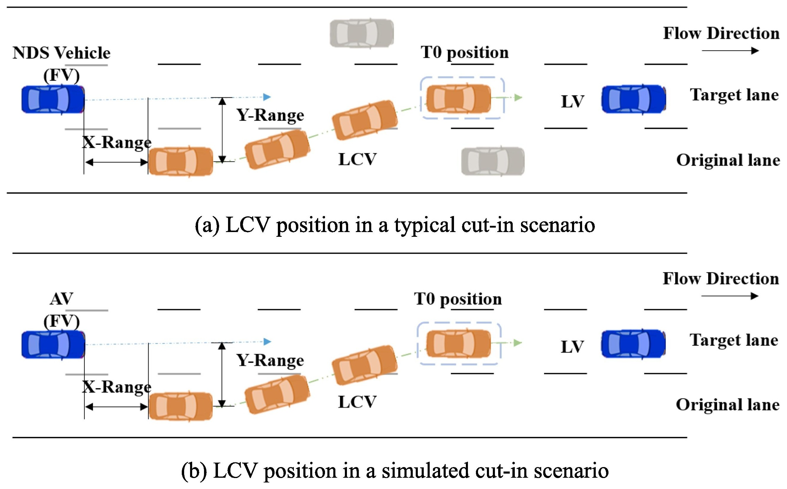
옆 차로 차(LCV)가 뒤차 FV 앞으로 끼어드는 상황. 위는 실주행(NDS), 아래는 시뮬레이션(AV) 차량 기준이다. Liu는 이 끼어들기에서 RSS 안전거리 모수를 보정한다. (클릭 시 확대)
Xu Fig 7 · RSS 적용 전후 AV vs 인간의 안전지표(TIT)
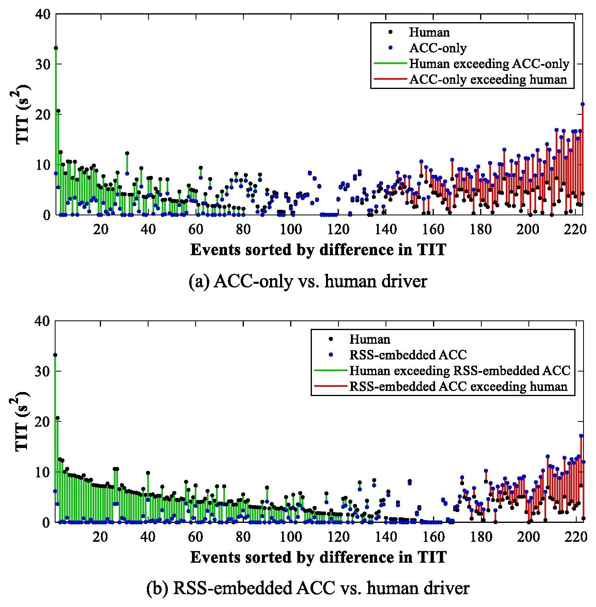
차간거리 사건들의 안전지표 TIT(낮을수록 안전)를 AV와 인간이 비교한 결과. 초록은 AV가 인간보다 안전한 경우인데, RSS를 얹은 (b)에서 그 영역이 넓어진다. RSS 보정이 안전을 높임을 보여준다. (클릭 시 확대)
Liu 2021 (끼어들기)
Xu 2021 (차간거리)
데이터
중국 자연주행연구(NDS) cut-in 사건
Shanghai 자연주행연구 car-following
보정 대상
RSS 안전거리·반응 모수
RSS 모수를 최저 TIT(최적 안전) 목표로
안전 효과
RSS 적용 후 사건당 평균 TTC 증가(안전 여유 ↑)
평균 TIT를 15초 사건당 2.65 s²로 제어
접근
RSS 모수를 자연주행 데이터로 보정·평가
Liu
끼어들기 · 중국 NDS · TTC로 효과 측정
Xu
차간거리 · Shanghai NDS · 최저 TIT 목표
우리와의 연결
RSS 라벨의 현실성(하한 u 신뢰 근거)
연구 배경
RSS의 안전거리·반응시간·제동력 모수는 사람이 정해야 하고, 너무 보수적이면 비현실적이다. 두 연구는 "RSS 규칙이 실제 운전 거동과 맞는가, 모수를 어떻게 정해야 하는가"를 자연주행 데이터로 따진다. RSS 카드에서 남긴 "형식 규칙은 보정이 필요하다"는 한계에 답하는 셈이다.
무엇을 했나
자연주행 데이터의 끼어들기(Liu Fig. 1)·차간거리 사건에서 RSS 모수를 보정하고, RSS를 따랐을 때 안전 대리지표(TTC·TIT)가 어떻게 변하는지 평가한다. Liu는 끼어들기에서 RSS 적용 후 사건당 평균 TTC가 늘어 안전 여유가 커짐을, Xu는 차간거리에서 RSS 모수를 최저 TIT 목표로 보정해 안전을 높임을 보인다.
방법론 상세
Liu (끼어들기): 중국 NDS의 cut-in 사건에서 RSS 안전거리 모수를 보정하고, TTC와 그 파생 지표(시간노출 TTC 등)로 안전을 평가한다.
Xu (차간거리): Shanghai NDS의 car-following에서 RSS 모수를 최적 안전 목표로 보정한다. 목표는 가장 낮은 time-integrated TTC를 내는 것"controlling the average TIT for each 15-second event at 2.65 s²"(§Results).
공통: 형식 규칙의 모수를 실데이터로 맞추고, 대리안전지표로 그 효과를 검증한다. RSS를 ACC 같은 실제 제어에 얹어 본다.
결과
두 경우 모두, RSS 모수를 실주행에 맞춰 보정하면 안전 대리지표가 개선된다(Liu는 TTC 증가, Xu는 TIT 제어). Xu의 비교에서는 RSS를 얹은 ACC가 그냥 ACC보다 더 많은 사건에서 인간 운전자보다 안전한 쪽으로 옮겨갔다(Xu Fig. 7). 즉 RSS는 탁상 규칙이 아니라 실제 거동에 맞춰 보정 가능한 규칙이며, 보정 후에는 안전 여유를 실제로 키운다.
한계
특정 시나리오(끼어들기·차간거리)와 특정 NDS 데이터에 한정된다. 보정된 모수가 다른 지역·차종에 그대로 옮겨가는지는 별도 문제다. 또 안전 대리지표(TTC·TIT) 개선이 곧 "회피가능성 라벨의 정확도"를 뜻하지는 않는다.
본 연구와의 관계
RSS만으로는 "그 규칙이 현실적인가?"라는 의문이 남는데, 이 두 연구가 그 답을 준다. RSS 모수가 실주행 데이터로 보정 가능하므로, 우리가 RSS로 무과실·불가피 충돌을 라벨링해 하한 u를 정할 때 그 라벨을 신뢰할 근거가 된다.
우리는 보정된 RSS를 충돌의 회피가능성 판정에 쓰고, "ego가 보정된 RSS를 지켰는데도 당한 충돌"을 u로 모은다. 다만 이 두 연구는 안전 향상(대리지표 개선)을 목표로 하지, 우리처럼 측정 모델의 하한 모수를 추정하지는 않는다. 우리에게 이들은 RSS 라벨링을 실무에서 정당화하는 보정 근거다.
Driver models for the definition of safety requirements of automated vehicles in international regulations. Application to motorway driving conditions
K. Mattas, G. Albano, R. Donà, …, B. Ciuffo. Accident Analysis & Prevention 174 (2022) 106743. doi:10.1016/j.aap.2022.106743.
한눈에RSS와는 다른 결의 회피가능성 판정이다. UN R157 규제는 "유능하고 주의 깊은 인간 운전자(competent and careful human driver)"를 기준으로 삼아, 그 운전자라면 피했을 충돌은 ADS도 피해야 하는 preventable로, 못 피했을 충돌은 unpreventable로 가른다. 저자들은 RSS·Reg157·자체 제안 Fuzzy Safety Model(FSM) 등 네 모델이 끼어들기 시나리오를 preventable/unpreventable로 어떻게 가르는지 비교하고, 실교통 데이터에서 FSM이 가장 적합함을 보인다.
Fig 1 · 모델별 "피해야 하는(preventable)" 시나리오 영역
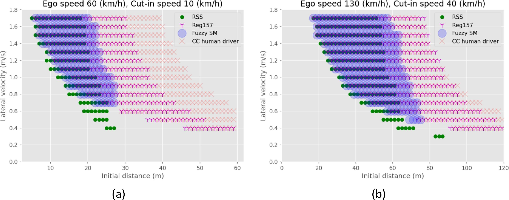
끼어들기 시나리오(초기 거리 × 횡속도)에서 각 모델이 회피가능(preventable)으로 보는 영역. RSS(녹색)가 가장 보수적이고 인간 운전자(분홍)가 가장 넓다. 회피가능성 경계가 기준 모델에 따라 달라진다. (클릭 시 확대)
접근
기준 운전자 모델로 preventable/unpreventable 구분(UN R157)
비교 모델
RSS · Reg157 · Fuzzy Safety Model(FSM) · 인간 운전자
핵심 결과
실교통 데이터에서 FSM이 가장 적합
우리와의 연결
회피가능성 라벨이 "기준 모델 선택"에 좌우됨
연구 배경
규제는 ADS가 "어떤 충돌을 반드시 피해야 하는가"를 정해야 한다. UN R157은 그 기준으로 유능하고 주의 깊은 인간 운전자를 둔다. 그 운전자라면 피했을 충돌이면 ADS도 피해야 하고(preventable), 그조차 못 피했으면 불가피(unpreventable)다.
무엇을 했나
네 운전자 모델(RSS, Reg157, FSM, 인간 운전자)이 충돌을 preventable/unpreventable로 어떻게 가르는지 비교한다(Fig. 1). preventable은 ADS가 사고를 피해야 하는 시나리오, unpreventable은 막을 수 없어 피해만 줄이는 시나리오로 정의한다"distinguish between preventable traffic scenarios, for which the ADS is expected to avoid an accident, and unpreventable traffic scenarios, for which accidents cannot be avoided..."(§본문). 그리고 실교통 데이터로 어느 모델이 잘 맞는지 검증한다.
방법론 상세
기준 운전자: competent and careful human driver를 성능 기준으로 둔다. 그 운전자가 피할 수 있는 사고는 ADS도 피해야 한다.
네 모델 비교: RSS, UN R157 모델, FSM(저자 제안), 인간 운전자 모델. 끼어들기 시나리오(초기 거리 × 횡속도)에서 각 모델이 회피가능으로 보는 영역을 비교한다(Fig 1).
실데이터 검증:고속도로 실교통 데이터로 각 모델의 분류 능력을 평가하니 FSM이 가장 적합했다"the FSM proved to be the most suitable of the investigated models"(§Results).
결과
Fig 1처럼 모델마다 preventable로 보는 영역의 경계가 다르다. RSS(녹색)가 가장 보수적이고 인간 운전자(분홍)가 가장 넓다. 실교통 데이터로 검증하니 FSM이 가장 잘 맞았고, 이 결과로 FSM이 규제 논의에 반영됐다.
한계
고속도로 끼어들기 중심이고, 기준 운전자 모델 자체에 모수와 가정이 들어간다. preventable/unpreventable 경계가 어떤 모델을 쓰느냐에 따라 달라진다(Fig 1). 즉 회피가능성 판정에 정답 하나가 있는 것이 아니다.
본 연구와의 관계
RSS가 책임 기반 규칙이라면, Mattas는 "기준 운전자라면 피했을까?"라는 다른 결의 회피가능성 판정을 보여준다. 핵심 시사점은 회피가능성 라벨이 어떤 기준 모델을 쓰느냐에 좌우된다는 것이다. 우리 하한 u도 라벨링 규칙 선택에 민감하다.
그래서 우리는 단일 규칙에 의존하기보다 RSS·FSM 같은 여러 기준의 일치·불일치를 점검하고 u 추정의 민감도를 함께 보고할 필요가 있다. Mattas는 그 후보 기준(특히 실데이터에서 가장 적합한 FSM)과, 라벨이 기준에 의존한다는 경계 감각을 우리에게 준다.
Safety Science 20232023예견·예방 가능성 정량화법–공학 연결
A quantitative method to determine what collisions are reasonably foreseeable and preventable
E. de Gelder, O. Op den Camp. Safety Science 167 (2023) 106233. doi:10.1016/j.ssci.2023.106233.
한눈에법·규제의 "합리적으로 예견·예방 가능한 충돌"이라는 모호한 기준을 정량 방법으로 바꾼다. 예견 가능성은 ODD 안에서 그 시나리오를 만날 확률로, 예방 가능성은 숙련·주의 운전자가 피할 수 있는가로 정의한다. 희귀한 위험 시나리오의 확률은 극단값(GPD) 모델로 추정하고, 어떤 ODD에도 적용된다. ADS가 반드시 피해야 할 충돌의 경계를 수치로 긋는다.
Fig 1 · 극단값(GPD) 밀도: 희귀 위험을 다루는 도구
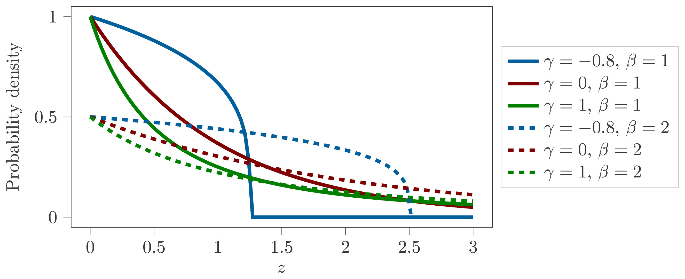
예견 가능성을 정량화할 때 드물게 일어나는 위험 시나리오의 확률을 일반화 파레토 분포(GPD)로 추정한다. 모양 모수 γ에 따라 꼬리의 두께가 달라진다. 흔치 않은 꼬리 사건을 데이터로 다루는 도구다. (클릭 시 확대)
Fig 8 · 예방 가능/불가능을 가르는 경계(LVD 시나리오)
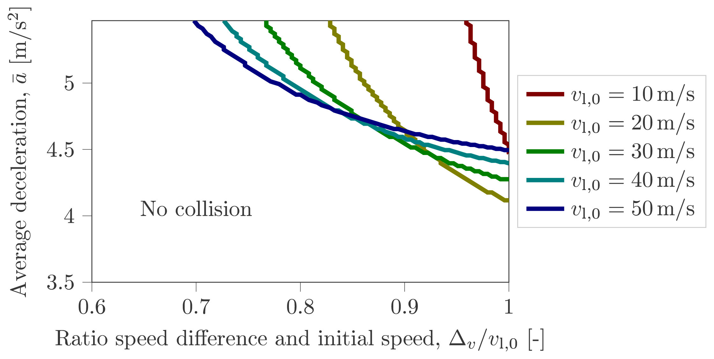
선행차 감속 시나리오의 매개변수 공간을, 숙련·주의 운전자가 피할 수 있는 'No collision' 영역과 피할 수 없는 영역으로 가르는 경계. 이 경계 바깥(못 피하는 쪽)이 unpreventable, 곧 우리 하한 u로 모이는 충돌이다. (클릭 시 확대)
접근
예견(ODD 내 확률) + 예방(숙련 운전자) 가능성 정량화
확률 추정
극단값(GPD)으로 희귀 위험 시나리오 확률
적용
어떤 ODD에도 적용 가능
우리와의 연결
하한 u에 "노출 확률" 차원을 더함
연구 배경
규제는 ADS가 "합리적으로 예견·예방 가능한" 충돌을 피해야 한다고 하지만, 그 말이 모호해 공학적으로 쓰기 어렵다. 저자들은 이 법적 기준을 수치로 판정하는 방법을 만든다. 그래야 개발자와 규제기관이 같은 잣대로 "어떤 충돌까지 책임지는가"를 말할 수 있다.
무엇을 했나
예견 가능성과 예방 가능성을 각각 정량화한다. 예견 가능 시나리오는 시스템의 ODD를 알아야 정해지고, 예방 가능 여부는 숙련·주의 운전자의 모사 성능을 기준으로 가른다."to determine the reasonably foreseeable scenarios, the ODD needs to be known"(§본문); 예방 임계는 "based on the simulated performance of a skilled and attentive human driver"(§본문, UN R157 기준 인용).
방법론 상세
예견 가능성: 시나리오 매개변수 공간에서 확률밀도를 추정한다. "Determine the probability of encountering scenarios within a specified parameter range"(§본문).
희귀 위험:드물게 일어나는 위험 시나리오의 확률은 극단값 이론(generalized Pareto, GPD)으로 추정한다(Fig. 1). 흔치 않은 꼬리 사건을 데이터로 다룰 수 있게 한다.
예방 가능성: 숙련·주의 운전자가 피할 수 있는 한계를 임계로 둔다. 그 운전자도 못 피하면 unpreventable이다.
일반성: 특정 ODD에 묶이지 않는다 "...and can be applied to any ODD"(§본문).
결과
예견·예방 가능한 충돌의 집합을 수치로 정의해, ADS가 반드시 피해야 할 범위의 하한(lower bound)을 제시한다. 선행차 감속(LVD) 시나리오의 경우 매개변수 공간(속도차/초기속도 비 × 평균 감속도)이 숙련·주의 운전자가 피할 수 있는 영역과 피할 수 없는 영역으로 깔끔하게 갈린다(Fig. 8). "합리적으로 예견·예방 가능"이라는 법적 기준이 측정 가능한 양이 되고, 그 경계 바깥의 충돌이 곧 unpreventable로 분류된다. 이 정량 방법은 개발자와 규제기관 모두에게 공통 기준을 준다.
한계
ODD와 시나리오 매개변수화에 의존하고, 확률밀도·극단값 적합에 데이터가 필요하다. 예방 가능성은 여전히 기준 운전자 모델(숙련·주의 운전자)에 의존한다. Mattas와 같은 민감성이 남는다.
본 연구와의 관계
de Gelder는 우리 하한 u에 새 차원을 더한다. RSS·FSM이 "이 한 충돌이 ego 잘못인가"를 가른다면, de Gelder는 "그런 불가피 시나리오가 얼마나 자주 일어나는가"를 확률로 정량화한다. 우리 u는 결국 "불가피 충돌의 비율"이므로, 어떤 시나리오가 예방 불가인지뿐 아니라 그것이 모집단에서 차지하는 노출 확률이 함께 들어간다.
de Gelder의 ODD 기반 확률 추정, 특히 극단값으로 희귀 위험을 다루는 방식은 우리가 u를 시나리오 분포 위에서 추정할 때 직접 쓸 수 있다. 또 "법적 기준의 정량화"라는 방향은 우리 측정 모델이 규제·인증에 어떻게 닿는지를 보여주는 연결점이다.
IEEE ICST 20202020회피가능 충돌 탐색라벨 자동화
Generating Avoidable Collision Scenarios for Testing Autonomous Driving Systems
A. Calò, P. Arcaini, S. Ali, F. Hauer, F. Ishikawa. IEEE Int. Conf. on Software Testing, Verification and Validation (ICST) 2020. TU Munich · National Institute of Informatics.
한눈에회피가능성을 도메인 지식 없이 순수하게 행동으로 정의한다. 핵심 통찰은 경로계획기가 8개 가중치(안전·차량 한계·규정 준수·승차감 등)로 조절되는 "경로계획기 한 집안"이라는 점이다. 어떤 충돌이든, 같은 시나리오에서 그 가중치만 다르게 준 대안 설정이 충돌을 피할 수 있으면 "회피가능"이고, 어떤 설정으로도 못 피하면 그 ADS 계열에는 불가피다. 충돌을 먼저 찾고 대안 설정을 찾는 순차 방식과, 충돌과 대안을 동시에 찾는 결합 방식을 비교하니 결합 방식이 회피가능 충돌을 훨씬 많이 찾았다(어떤 시나리오는 순차가 0건일 때도 결합은 전부 찾음).
Fig 1 · 회피가능 충돌은 두 거동의 경계에서 생긴다
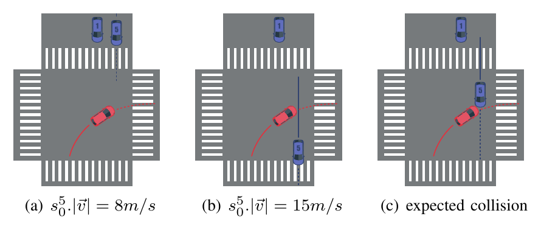
교차로에서 배경차 #5의 속도를 8 m/s(a)와 15 m/s(b)로 두면 ego(빨강 우회전)와 충돌이 없지만, 그 사이 속도(c)에서 충돌이 예상된다. 탐색은 이렇게 "두 안전한 끝값 사이"에서 충돌을 찾는다. (클릭 시 확대)
Table III · 회피가능 충돌 발견 수 (순차 vs 결합, 30회 중)
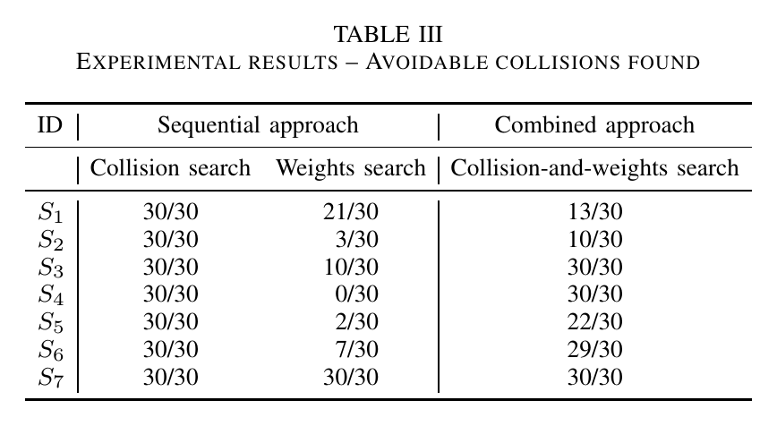
30회 반복 중 회피가능 충돌을 찾은 횟수. 순차 방식은 S4에서 0/30인데 결합 방식은 30/30으로 찾는다. S3·S5·S6에서도 결합이 크게 앞선다. 예외는 S1(순차 21 vs 결합 13)뿐이다. (클릭 시 확대)
접근
탐색 기반 시험(NSGA-II), 회피가능 충돌 시나리오 생성
회피가능 정의
가중치만 바꾼 대안 planner가 그 충돌을 피하면 회피가능
두 방식
순차(충돌→대안) vs 결합(충돌+대안 동시)
우리와의 연결
u = "어떤 정책으로도 못 피하는 충돌"로 가는 길
연구 배경
ADS를 시뮬레이션으로 시험할 때 탐색 기반 방법은 위험한 상황, 곧 충돌을 잘 찾아낸다. 그러나 충돌이 하나 나왔다고 그것이 ADS의 결함이라고 단정할 수 없다. 어떤 충돌은 무엇을 해도 피할 수 없기 때문이다. 문제는 이 판정을 전문가의 사후 분석 없이 자동으로 하기가 어렵다는 데 있다. 게다가 RSS나 기준 운전자 모델 같은 판정 규칙은 도메인 가정을 깔고 들어가는데, 저자들은 산업 파트너의 경로계획기를 black box로만 받았기에 그런 내부 지식 없이 회피가능성을 정의해야 했다. 그래서 시스템에 대해 아는 것이라곤 "가중치를 바꾸면 거동이 달라진다"는 사실 하나뿐인 상황에서 출발한다.
무엇을 했나
회피가능성을 외부 지식이 아니라 시스템을 재설정할 수 있다는 사실 하나로만 정의한다. 경로계획기는 8개 가중치 w로 조절되고, 각 가중치 조합이 사실상 다른 planner가 되어 "한 집안"을 이룬다(Fig. 1). 정의 7: 시나리오 S에서 기본 설정 ADSw가 충돌하더라도, 어떤 다른 가중치 w'로 둔 ADSw'가 그 충돌을 피하면 그 충돌은 회피가능이다. 다만 그 w'가 전반적으로 더 안전하다는 뜻은 아니다 "ADSw′ is only a witness that the current path planner component can be improved as this particular collision could be avoided"(§IV-B). 즉 w'는 "이 충돌은 피할 수 있었다"는 증거일 뿐이다.
방법론 상세
danger 지표: 충돌 여부와 근접도를 하나의 위험값으로 만들어 탐색을 이끈다. 충돌이 없는 최소 거리 1.8 m, 가능한 최대 상대속도 320 km/h를 기준으로 상수 K=100을 잡아 충돌/비충돌 사이에 원하는 danger 차이가 나게 한다.
순차 방식(SA): 먼저 danger를 최대화해 충돌 시나리오 Sf를 찾고(단일 목적), 그다음 그 충돌을 피하는 대안 가중치 w'를 찾는다(다목적: Sf의 danger 최소화 + 원래 가중치에서 너무 벗어나지 않기). 약점은 첫 탐색이 너무 심한 충돌을 찾아 버리면 어떤 설정으로도 못 피해, 개선 정보를 못 준다는 것이다"The main weakness of the sequential approach is that it may only find unavoidable collisions"(§IV-C).
결합 방식(CA): 시나리오 필드 f와 대안 가중치 w'를 한 개체로 묶어 충돌과 회피 설정을 동시에 탐색한다(collision-and-weights search). 덜 심해서 피할 수 있는 충돌을 직접 노린다.
탐색·통계: 다목적 진화알고리즘 NSGA-II로 30회 반복하고, 두 방식을 Mann-Whitney U 검정과 A12 효과크기로 비교한다(Table IV). 가중치 탐색 범위는 원래 값과 같은 자릿수로 제한한다.
결과
결합 방식이 회피가능 충돌을 훨씬 많이 찾았다(Table III). 특히 순차 방식이 한 번도 회피가능 충돌을 못 찾은 S4(0/30)에서 결합 방식은 30/30으로 모두 찾았고, S3(10→30)·S5(2→22)·S6(7→29)에서도 크게 앞섰다. 그 이유는 순차 방식의 첫 충돌 탐색이 피할 수 없는 심한 충돌을 골라 버리기 때문이다 "the combined approach... finds many more avoidable collisions than the sequential approach (scenarios S2, S3, S4, S5, and S6): these are the cases in which the collision search of the sequential approach found too severe collisions that cannot be avoided, but there are less severe collisions that can"(§V). 유일한 예외는 S1로, 회피가능 시나리오가 원래 많은 경우라 문제를 둘로 쪼갠 순차 방식이 오히려 더 많이 찾았다. 핵심은 회피가능성을 외부 규칙이 아니라 "그 ADS를 다르게 두면 피했는가"로 판정한다는 점이다.
한계
회피가능성이 탐색한 가중치 공간에 상대적이다. 가중치를 원래 값과 같은 자릿수로 제한하므로, 그 범위 안에 피하는 설정이 없어도 더 넓은 설정이라면 피할 수도 있어 절대적 불가피성을 보장하지는 못한다. 또 결합 방식은 회피가능 충돌을 더 많이 찾는 대신 최소 가중치 변경을 잘 못 찾아 해의 질이 떨어지고, 탐색 비용이 크다. 한 번에 시나리오 하나만 다루고 NSGA-II 한 알고리즘만 썼으며, 특정 산업 경로계획기에 묶인다.
본 연구와의 관계
Calò는 우리 하한 u에 RSS·규제와는 또 다른 라벨 방식을 준다. RSS가 "ego가 규칙을 지켰나"로, Mattas가 "기준 운전자가 피했을까"로 가른다면, Calò는 "그 ADS를 다르게 설정하면 피했을까"로 가른다. 도메인 가정 없이 시스템 자신의 재설정만으로 회피가능성을 정의한다는 점이 특히 우리와 가깝다.
우리 u(불가피 충돌 비율)는 곧 "어떤 정책으로도 피할 수 없는 충돌"인데, 이는 Calò의 정의를 한 planner 집안이 아니라 정책 집단 전체로 확장한 것과 같다. IRT에서 능력 θ가 아무리 높아도(어떤 AV로도) 깔리는 하한이 바로 그것이다. 즉 "대안 가중치가 피하면 회피가능"을 "어떤 AV도 못 피하면 u"로 일반화하면 우리 모델의 하한과 정확히 맞물린다. Calò가 회피가능성을 탐색한 설정 공간에 상대적인 양으로 본 것도, 우리가 u를 "고려한 정책 집단에 상대적인 하한"으로 정의해야 한다는 경계 감각을 준다. 다만 우리는 이 라벨을 측정 모델의 하한 모수로 통합하지, 시험 케이스 생성에 쓰지는 않는다.
Honors Project 2025 (Ohio Dominican)2025학습 기반 귀책라벨 자동화
Unraveling Responsibility: CrashML Analyzer, a Machine Learning Approach for Fault Assignment in Autonomous Driving Collisions
F. P. Rwejuna. Honors Senior Project, Ohio Dominican University (2025). (SAE 2026-01-0160의 바탕)
한눈에충돌 책임 소재를 사람이 일일이 판정하는 대신 학습으로 자동 예측한다. 캘리포니아 DMV 충돌 보고서 563건으로 모델을 학습해, 보고된 책임(완전과실·부분과실·무과실)을 세 모델 평균 96% 정확도로 재현한다. 특히 AV 충돌의 69.4%가 AV 무과실로 분류돼, 충돌 대다수가 ego 잘못이 아님을 보여준다. 회피가능성 라벨을 데이터에서 자동으로 붙일 수 있다는 증거다.
Fig 2 · CA-DMV 충돌의 책임 배정 분포(2019–2024)
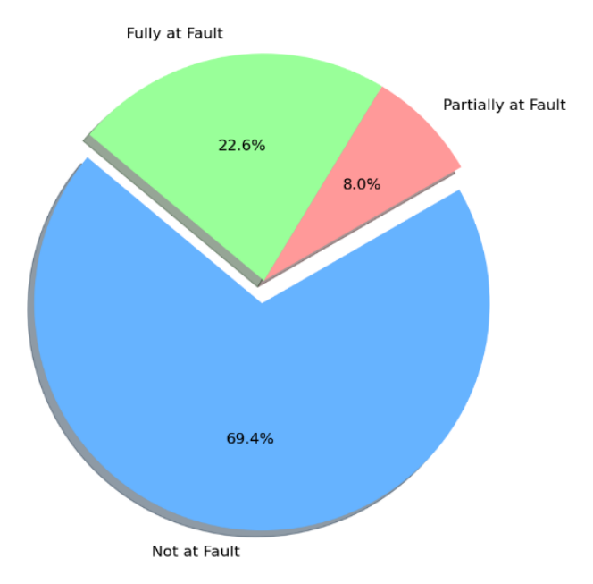
CA-DMV AV 충돌의 책임 분포: 무과실 69.4%, 완전과실 22.6%, 부분과실 8%. 충돌의 약 70%가 AV 잘못이 아니다. (클릭 시 확대)
접근
충돌 보고서로 책임(과실) 분류를 학습
데이터
CA-DMV 563건(2019–2024)
정확도
세 모델 평균 96% (GBM·선형·랜덤포레스트)
우리와의 연결
하한 u 라벨링의 자동화·확장
연구 배경
충돌마다 "AV 잘못인가"를 사람이 보고서로 판정하는 것은 느리고 일관성이 떨어진다. 저자는 충돌 보고서에서 책임을 자동으로 예측하는 틀을 만든다. RSS·규제 같은 규칙이 다 못 가리는 경우를 데이터로 메우려는 시도다.
무엇을 했나
CA-DMV 충돌 보고서 563건(2019–2024)에서 특징(충격 지점·차량 거동·기상·도로·조명 등)을 뽑아, 보고된 책임을 예측하는 분류기를 학습한다(Fig. 2). 완전과실·부분과실·무과실 3분류를 세 모델 평균 96% 정확도로 재현한다"achieving 96% average accuracy across three models: Gradient Boosting, Linear Regression, and Random Forest"(§본문).
방법론 상세
데이터·라벨: CA-DMV 563건. Class 0 무과실 69.4%, Class 1 부분과실 8%, Class 2 완전과실 22.6%로, 대다수가 AV 무과실이다(Fig 2).
특징: 충격 지점, 차량 거동, 기상·도로·조명, 시간·지역 등 feature engineering으로 추출.
모델: Gradient Boosting, Linear Regression, Random Forest. 보고된 책임을 평균 96% 정확도로 재현.
결과
세 모델 모두 보고된 책임을 높은 정확도(평균 96%)로 재현한다. 특히 무과실(Class 0) 식별은 세 모델 모두 F1 98% 이상으로 매우 안정적이었다 "For class 0, all models achieved a high performance with the F-1 score of above 98%, identifying that AV was \"Not at Fault\""(§Results). 반면 부분과실(Class 1)은 표본이 적어 어려웠다(랜덤포레스트 F1 40%). 핵심은 책임 판정이 데이터로 학습·자동화될 수 있다는 점, 그리고 AV 충돌의 약 70%가 AV 무과실이라는 점이다.
한계
실세계 사고 보고서의 "책임"은 법적·서술적 판정이라, 시뮬레이션 시나리오의 물리적 회피가능성과 정확히 같지는 않다. 또 학부 프로젝트본이라 표본·특징이 제한적이고, 보고서 라벨 자체의 편향을 물려받는다.
본 연구와의 관계
앞 카드들(RSS·Mattas·de Gelder·Calò)이 회피가능성 라벨의 "기준"을 줬다면, CrashML은 그 라벨을 데이터에서 자동·대규모로 붙이는 길을 보여준다. 우리 u는 수많은 시나리오·AV에 대해 회피가능성 라벨이 필요한데, 규칙(RSS)으로 다 못 가리는 경우 학습 기반 귀책이 보완할 수 있다.
게다가 AV 충돌의 약 70%가 무과실이라는 분포는, 충돌률을 그대로 강건성으로 쓰면 안 되고 u를 떼어내야 한다는 우리 동기를 실데이터로 뒷받침한다. 다만 보고서의 법적 책임과 우리의 물리적 회피가능성은 구분해 써야 한다.
Springer LNCS 20262026RSS 적용 파이프라인실무 연결
From Scenario Selection to Simulation: Safety Testing of an Automated Driving System
F. Khan, A. I. Güllü, H. Anwar, D. Pfahl. Lecture Notes in Computer Science (2026). University of Tartu. doi:10.1007/978-3-032-12089-2_31.
한눈에RSS를 실제 ADS 시험 파이프라인의 안전 판정 잣대로 쓴 적용 연구다. 가능한 시나리오가 무한하므로, 먼저 SSTSS 과정으로 공개 카탈로그(NHTSA·Euro NCAP) 시나리오를 ODD로 거르고 사고 데이터로 우선순위를 매겨 고른다. 이 연구는 그렇게 1순위로 뽑힌 "선행차 추종(Follow Lead Vehicle)" 시나리오를 CARLA에서 실제 차량 UT-ADS로 돌리고, 매 순간 실제 차간거리를 RSS가 요구하는 최소 안전거리와 비교해 안전을 판정한다. 예비 결과로 UT-ADS는 저속에서는 안전거리를 지키지만 고속에서는 RSS 최소 안전거리를 위반했다. RSS가 탁상 규칙이 아니라 실제 시험 워크플로의 오라클로 쓰일 수 있음을 보인다.
Fig 1 · 방법론 개요(선택 → 구현 → 시뮬레이션 → 평가)
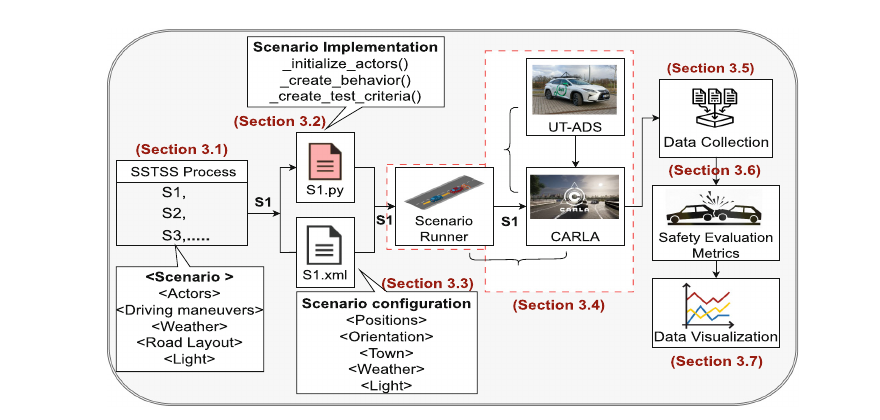
SSTSS로 우선순위화해 고른 시나리오를 구현해 CARLA에서 실제 ADS(UT-ADS)로 실행하고, 안전 지표(충돌·RSS 안전거리)를 수집·시각화한다. 평가 단계에서 RSS가 안전 판정 잣대로 쓰인다. (클릭 시 확대)
Fig 3 · ego 속도 10~50 km/h에서 실제 차간거리 vs RSS 최소 안전거리
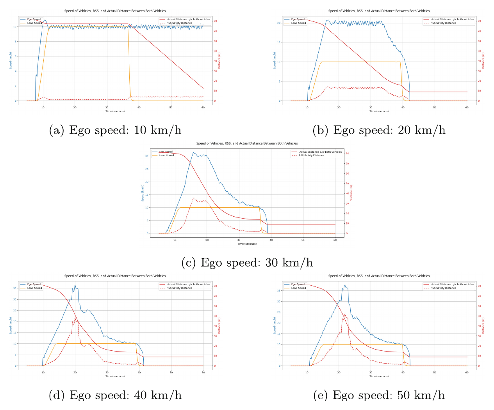
ego 속도를 10에서 50 km/h까지 올린 다섯 경우. 실제 차간거리(빨강 실선)가 RSS 최소 안전거리(빨강 점선) 위에 있으면 안전, 아래로 내려가면 위반이다. 저속에선 지키지만 고속으로 갈수록 위반한다. (클릭 시 확대)
접근
SSTSS로 고른 시나리오를 CARLA 시뮬레이션 + RSS로 안전 판정
선택 기준
ODD 필터 + 사고 데이터 우선순위(RSS는 평가 잣대)
검증
실제 ADS(UT-ADS, Autoware Mini) + CARLA·ScenarioRunner
우리와의 연결
RSS 라벨링의 실무 적용 가능성
연구 배경
ADS는 실세계에서 무한히 많은 시나리오를 만나므로 모든 경우를 시뮬레이션으로 시험할 수 없다. 그래서 저자들은 앞선 연구에서 SSTSS(Simulation-Based Safety Testing Scenario Selection) 과정을 제안했는데, 이는 RSS로 고르는 것이 아니라 공개 시나리오 카탈로그를 ODD와 시뮬레이터 한계로 거른 뒤 사고 데이터로 우선순위를 매겨 시험할 시나리오 목록을 만드는 절차다. 이 논문은 그 목록에서 1순위 시나리오를 골라 실제 ADS의 안전 거동을 평가하는 데까지 나아간다.
무엇을 했나
SSTSS가 1순위로 뽑은 시나리오, 곧 "선행차가 앞에서 더 느리게 달리는" Follow Lead Vehicle 시나리오를 선택해(여기에 선행차가 갑자기 멈추는 변형을 더한다) CARLA에서 실제 차량 UT-ADS로 시뮬레이션한다(Fig. 1). 안전은 두 잣대로 본다. 충돌 발생 여부, 그리고 매 순간 실제 차간거리가 RSS가 요구하는 최소 안전거리 이상인지다"we use the Responsibility Sensitive Safety (RSS) model to evaluate the minimum required distance that the ego vehicle must maintain from the lead vehicle to avoid a collision"(§3.4). 시나리오 선택부터 구현·시뮬레이션·평가까지 end-to-end로 잇고, 그 결과를 UT-ADS 개발자에게 돌려줄 피드백으로 삼는다.
방법론 상세
시나리오: 두 행위자(속도 vr의 ego, 속도 vf의 선행차)와 초기 거리 di로 정의되는 Follow Lead Vehicle. 선행차가 급정지하는 변형을 더해 더 까다롭게 만든다.
환경: CARLA + ScenarioRunner로 시나리오를 실행하고, ego는 실제 UT-ADS(Autoware Mini 자율주행 스택, ROS 1 Noetic)다.
두 안전 지표: 충돌은 ScenarioRunner의 CollisionTest()로 탐지하고, 안전거리는 매 시간 단계의 실제 종방향 거리를 이론적 RSS 최소 안전거리 dmin과 비교한다. 초기화 잡음을 줄이려 처음 200프레임은 제외한다.
실험 설계: 한 번에 한 모수만 바꾼다. vr·vf는 10~50 km/h, di는 10~80 m 범위(도심 조건)다. 진행 중인 연구라 이번에는 ego 속도 vr만 10에서 50 km/h까지 10씩 올린 5개 케이스를 보고, 선행차 속도는 10 km/h, 초기 거리는 80 m로 고정한다.
결과
다섯 속도 케이스를 한 그림에 모으면 패턴이 분명하다(Fig. 3). 실제 차간거리(빨강 실선)가 RSS 최소 안전거리(빨강 점선) 위에 있으면 안전이고 아래로 내려가면 위반인데 "The ego vehicle maintains a safe distance when the solid line stays above the red dashed line; if it drops below, it violates the RSS safe distance"(§5), UT-ADS는 저속에서는 안전거리를 지키지만 고속으로 갈수록 RSS 최소 안전거리를 위반한다"the UT-ADS maintains a safe following distance under lower speeds but may violate the minimum safe distance at higher speeds"(§6). 저자들은 이를 근거로 UT-ADS 개발자에게 고속에서 안전거리를 더 정확히 추정하도록 계획·제어 모듈을 개선하라고 권한다.
한계
예비 연구라 규모가 작다. ego 속도 하나만 바꾼 5개 케이스이고, 단순한 follow-lead 한 시나리오에 한정된다. 나머지 모수 조합과 기상·조명, 다중 행위자가 얽힌 복잡한 시나리오는 향후 과제로 남는다. 또 RSS 최소 안전거리 자체가 반응시간·제동력 같은 RSS 모수 선택에 의존한다.
본 연구와의 관계
Khan은 RSS가 실제 ADS 시험 워크플로(시나리오 선택 → 시뮬레이션 → 평가)에서 안전 판정 잣대로 그대로 돌아감을 보인다. 우리가 RSS로 충돌의 회피가능성을 라벨링해 하한 u를 정하는 절차도, Khan처럼 시뮬레이션 파이프라인 안에서 매 순간 자동으로 계산해 붙일 수 있음을 뒷받침한다. 실제 RSS dmin을 매 시간 단계에 계산하는 그의 구현이 곧 우리 라벨링 단계의 실물 예다.
우리 데이터 격자(여러 AV × 여러 시나리오)를 시뮬레이션으로 채울 때, 각 충돌에 RSS 라벨을 붙이는 단계가 바로 Khan의 평가 단계에 끼워진다. 다만 Khan은 RSS를 한 ADS의 안전을 진단하는 합격/불합격 잣대로 쓰지, 우리처럼 여러 AV의 응답에서 측정 모델의 하한 모수 u를 추정하는 데 쓰지는 않는다. 또 그의 "고속에서 RSS 위반"은 충돌이 곧 ego 책임인 회피가능 충돌의 예라, 우리 라벨링에서 u에 들어가지 않을 사례에 해당한다.
섹션 D 정리
회피가능성·귀책을 일곱 갈래로 검토했다. 형식 책임 규칙(RSS) → 그 규칙의 실주행 보정(Liu·Xu) → 규제의 기준 운전자 모델(Mattas) → 예견·예방 가능성의 확률적 정량화(de Gelder) → 대안 설정 기반 회피가능성(Calò) → 학습 기반 자동 귀책(CrashML) → 시험 파이프라인 적용(Khan). 한목소리로 두 가지를 말한다. 첫째, 충돌은 ego 잘못과 무과실이 섞여 있고(CrashML에서 약 70%가 무과실), 따라서 충돌률을 그대로 강건성으로 쓰면 안 된다. 둘째, "어떤 충돌이 피할 수 있었나"를 규칙·보정·확률·학습으로 라벨링할 수 있으며, 라벨은 기준 선택에 민감하다. 우리는 이 라벨로 하한 u를 정해 강건성에서 떼어내되, 여러 기준의 민감도를 함께 보고한다. 회피가능성 라벨을 모든 정책으로 일반화하면("어떤 AV도 못 피하면 u") 우리 IRT 하한과 정확히 맞물린다.